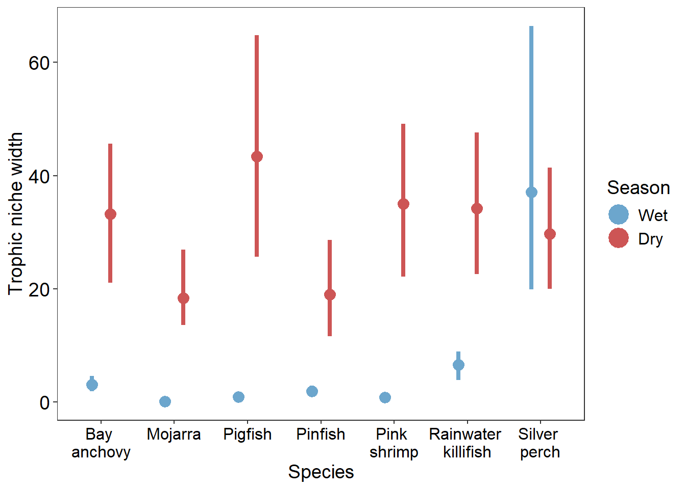

library(tidyverse)
## ── Attaching core tidyverse packages ──────────────────────── tidyverse 2.0.0 ──
## ✔ dplyr 1.1.4 ✔ readr 2.1.5
## ✔ forcats 1.0.0 ✔ stringr 1.5.1
## ✔ ggplot2 3.5.1 ✔ tibble 3.2.1
## ✔ lubridate 1.9.3 ✔ tidyr 1.3.1
## ✔ purrr 1.0.2
## ── Conflicts ────────────────────────────────────────── tidyverse_conflicts() ──
## ✖ dplyr::filter() masks stats::filter()
## ✖ dplyr::lag() masks stats::lag()
## ℹ Use the conflicted package (<http://conflicted.r-lib.org/>) to force all conflicts to become errors
library(hypervolume)
## Loading required package: Rcpp
library(truncnorm)
# load all data
d = read_csv('data/CESImixResults.csv')
## Rows: 56 Columns: 7
## ── Column specification ────────────────────────────────────────────────────────
## Delimiter: ","
## chr (3): species, season, source
## dbl (4): mean, sd, lowend, highend
##
## ℹ Use `spec()` to retrieve the full column specification for this data.
## ℹ Specify the column types or set `show_col_types = FALSE` to quiet this message.
d
## # A tibble: 56 × 7
## species season source mean sd lowend highend
## <chr> <chr> <chr> <dbl> <dbl> <dbl> <dbl>
## 1 Bay anchovy Wet Algae 0.02 0.016 0 0.061
## 2 Mojarra Wet Algae 0.004 0.004 0 0.013
## 3 Pigfish Wet Algae 0.008 0.008 0 0.028
## 4 Pinfish Wet Algae 0.028 0.018 0 0.062
## 5 Pink shrimp Wet Algae 0.009 0.008 0 0.031
## 6 Rainwater killifish Wet Algae 0.016 0.017 0 0.063
## 7 Silver perch Wet Algae 0.02 0.024 0 0.091
## 8 Bay anchovy Wet Epiphytes 0.3 0.067 0.153 0.418
## 9 Mojarra Wet Epiphytes 0.04 0.02 0.009 0.084
## 10 Pigfish Wet Epiphytes 0.076 0.034 0.019 0.149
## # ℹ 46 more rowsExample 3: trophic niche of seagrass consumers
Seasonal comparison of trophic niche of seagrass consumers
This vignette uses hypervolumes to quantify the trophic niche of seagrass consumers. Hypervolumes are generated using mean and standard deviation resource use data from stable isotope mixing models. This process is repeated 50 times. Hypervolume overlap metrics, as well as size and centroid distance, are used to understand how consumers niches change between seasons.
data
The data used for this vignette comes from James et al. 2022. The resource use data consists of mean and standard deviation of four resources for each species in each season based on mixing model outputs. Data comes from species collected across Florida Bay, USA.

Prepare data
Here a custom function HVvalues() is used to generate random points from mean and standard deviation data between end points (lower and upper bounds) using the truncnorm package. Values can then be z-scored.
*** Note chose either column names or column numbers for ID_rows and names either work but must be the same - df = dataframe or tibble with each row containing - unique entry for making random points - ID_rows = vector of column names or numbers with id information - names = column name or number of name of measure variables - mean = column name or column number of df with mean - sd = column name or column number of df with sd - n = number of points to randomly generate - z_score = T or F, if T z-scores values - end_points = T or F for if random points need to be generated between - a high and low end point (e.g. 5% and 95% interval) - low and high required if end_points = T - low = column name or column number of df with lower bound to sample in - high = column name or column number of df with upper bound to sample in
HVvalues = function(df, ID_rows, names, mean, sd, n, z_score = F,
end_points = F, low = NULL, high = NULL){
require(tidyverse)
require(truncnorm)
# check to see if information is needed to restrict where points are
if (end_points){
if (is_empty(df[,low]) | is_empty(df[,high])){
return(cat('Warning: low and/or high columns not specified \n
Specific and run again or end_points = F \n'))
}
}
# check to see if there are more
if(T %in% duplicated(df[,c(ID_rows,names)])){
return(cat('Warning: some of the rows contain duplicated information \n
make sure data is correct \n'))
}
# rename variables to make code work
if (is.numeric(mean)){
names(df)[mean] = 'Mean'
}else {
df = df |> rename(Mean = mean)
}
if (is.numeric(sd)){
names(df)[sd] = 'SD'
}else {
df = df |> rename(SD = sd)
}
if (end_points){
if (is.numeric(low)){
names(df)[low] = 'lower'
}else {
df = df |> rename(lower = low)
}
if (is.numeric(high)){
names(df)[high] = 'upper'
}else {
df = df |> rename(upper = high)
}
}
# make sure the names is not numeric
if (is.numeric(names)){
names = names(df)[names]
}
labs = unique(as.vector(df[,names])[[1]])
# generate random points within bounds
if(end_points){
df_tot = df |> slice(rep(1:n(), each=n))|>
mutate(point =
truncnorm::rtruncnorm(1, a = lower, b = upper,
mean = Mean, sd = SD)) |>
ungroup() |>
mutate(num = rep(1:n, times=nrow(df))) |>
dplyr::select(-Mean, -SD, -lower, -upper)|>
pivot_wider(names_from = names, values_from = point)|>
dplyr::select(-num)
}else {
# generate random points outside of bounds
df_tot = df |> slice(rep(1:n(), each=n))|>
mutate(point =
truncnorm::rtruncnorm(1, mean = Mean, sd = SD)) |>
ungroup() |>
mutate(num = rep(1:n, times=nrow(df))) |>
dplyr::select(-Mean, -SD)|>
pivot_wider(names_from = names, values_from = point)|>
dplyr::select(-num)
}
if (z_score){
df_tot = df_tot |>
mutate(across(all_of(labs), scale))
}
return(df_tot)
}30 points are generated for each species in each season using map(), and this process is repeated 50 times.
# number or iterations
reps = 50
# generate points and z-score across iterations
set.seed(14)
df = d |>
# duplicate for number of reps
slice(rep(1:n(), each=reps))|>
mutate(i = rep(1:reps, times=nrow(d))) |>
group_by(i) |>
nest() |>
# apply function to generate random points
mutate(points = map(data, \(data) HVvalues(df = data, ID_rows = c('species', 'season'),
names = c('source'),
mean = 'mean', sd = 'sd', n = 30,
end_points = T, low = 'lowend', high = 'highend',
z_score = T))) |>
select(i, points) |>
unnest(points)
## Warning: There were 3 warnings in `mutate()`.
## The first warning was:
## ℹ In argument: `points = map(...)`.
## ℹ In group 1: `i = 1`.
## Caused by warning:
## ! Using an external vector in selections was deprecated in tidyselect 1.1.0.
## ℹ Please use `all_of()` or `any_of()` instead.
## # Was:
## data %>% select(low)
##
## # Now:
## data %>% select(all_of(low))
##
## See <https://tidyselect.r-lib.org/reference/faq-external-vector.html>.
## ℹ Run `dplyr::last_dplyr_warnings()` to see the 2 remaining warnings.
df
## # A tibble: 21,000 × 7
## # Groups: i [50]
## i species season Algae[,1] Epiphytes[,1] Mangrove[,1] Seagrass[,1]
## <int> <chr> <chr> <dbl> <dbl> <dbl> <dbl>
## 1 1 Bay anchovy Wet -0.748 0.260 1.99 -0.330
## 2 1 Bay anchovy Wet 0.282 0.332 2.15 -0.466
## 3 1 Bay anchovy Wet 0.456 -0.0134 2.10 0.0613
## 4 1 Bay anchovy Wet 0.186 -0.648 2.39 -0.260
## 5 1 Bay anchovy Wet -0.478 -0.265 1.82 -0.232
## 6 1 Bay anchovy Wet 0.0711 -0.369 1.76 0.0775
## 7 1 Bay anchovy Wet -0.490 -0.675 1.66 -0.481
## 8 1 Bay anchovy Wet 0.000560 -0.465 2.24 -0.322
## 9 1 Bay anchovy Wet -0.625 -0.158 2.34 -0.619
## 10 1 Bay anchovy Wet -0.0106 -0.425 2.07 -0.670
## # ℹ 20,990 more rowsHypervolumes
Hypervolumes are generated for each species and season and the size of each hypervolume is calculated.
df = df |>
group_by(species, season, i) |>
nest() |>
mutate(hv = map(data, \(data) hypervolume_gaussian(data, name = paste(species, season, i,sep = '_'),
samples.per.point = 500,
kde.bandwidth = estimate_bandwidth(data),
sd.count = 3,
quantile.requested = 0.95,
quantile.requested.type = "probability",
chunk.size = 1000,
verbose = F)),
hv_size = map_dbl(hv, \(hv) get_volume(hv)))** Do not try to view df in rstudio it will freeze your r since it is too big
head(df)
## # A tibble: 6 × 7
## # Groups: species, season, i [6]
## i species season data hv hv_size centroid
## <int> <chr> <chr> <list> <list> <dbl> <list>
## 1 1 Bay anchovy Wet <tibble [30 × 4]> <Hypervlm> 3.27 <dbl>
## 2 1 Mojarra Wet <tibble [30 × 4]> <Hypervlm> 0.0909 <dbl>
## 3 1 Pigfish Wet <tibble [30 × 4]> <Hypervlm> 1.22 <dbl>
## 4 1 Pinfish Wet <tibble [30 × 4]> <Hypervlm> 3.09 <dbl>
## 5 1 Pink shrimp Wet <tibble [30 × 4]> <Hypervlm> 0.962 <dbl>
## 6 1 Rainwater killifish Wet <tibble [30 × 4]> <Hypervlm> 6.32 <dbl>Hypervolume metrics
Combine each species and season to calculate the overlap and centroid distance of each species
ov_sn = df |>
select(species, season, hv, hv_size) |>
pivot_wider(names_from = season, values_from = c(hv,hv_size)) |>
mutate(size_rat = hv_size_Dry/hv_size_Wet,
set = map2(hv_Wet,hv_Dry, \(hv1, hv2) hypervolume_set(hv1, hv2, check.memory = F, verbose = F)),
ov = map(set, \(set) hypervolume_overlap_statistics(set)),
dist_cent = map2_dbl(hv_Wet,hv_Dry, \(hv1,hv2) hypervolume_distance(hv1, hv2, type = 'centroid', check.memory=F))) |>
unnest_wider(ov) |>
select(species, i, hv_size_Wet, hv_size_Dry,
size_rat, jaccard, sorensen,
uniq_Wet = frac_unique_1, uniq_Dry = frac_unique_2,
dist_cent)## Rows: 350 Columns: 10
## ── Column specification ────────────────────────────────────────────────────────
## Delimiter: ","
## chr (1): species
## dbl (9): i, hv_size_Wet, hv_size_Dry, size_rat, jaccard, sorensen, uniq_Wet,...
##
## ℹ Use `spec()` to retrieve the full column specification for this data.
## ℹ Specify the column types or set `show_col_types = FALSE` to quiet this message.Overlap
cols = c("Pinfish" = 'yellow2',
"Mojarra" = 'slategray4',
"Silver perch" = 'snow3',
"Bay anchovy" = 'deepskyblue1',
"Pigfish" = 'orange',
"Pink shrimp" = 'pink',
"Rainwater killifish" = 'firebrick',
'All' = 'black')
df = ov_sn|>
group_by(species) |>
summarize(mean = mean(sorensen),
median = median(sorensen),
low = quantile(sorensen, 0.025),
up = quantile(sorensen, 0.975))
ggplot(df, aes(x = species, y = mean, color = species))+
geom_pointrange(aes(ymin = low, ymax = up),
size = 1.5, linewidth = 1.5, fatten = 2,
position=position_dodge(width = 0.5))+
labs(x = NULL, y = 'Niche overlap') +
scale_x_discrete(labels = c("Bay \nanchovy",
"Mojarra",
"Pigfish",
"Pinfish",
"Pink \nshrimp",
"Rainwater \nkillifish",
"Silver \nperch" ))+
scale_color_manual(values = cols)+
theme_bw()+
theme(axis.title = element_text(size = 14),
axis.text.y = element_text(size = 14, colour = "black"),
axis.text.x = element_text(size = 12, colour = "black"),
plot.title = element_text(size = 14, hjust=0.5),
panel.grid.major = element_blank(),
panel.grid.minor = element_blank(),
legend.position = 'none',
legend.title = element_text(size = 14),
strip.text.x = element_text(size = 14),
legend.text = element_text(size = 12))Percent unique
df = ov_sn|>
pivot_longer(uniq_Wet:uniq_Dry,names_to = 'season',
values_to = 'vol') |>
group_by(species, season) |>
summarize(mean = mean(vol),
median = median(vol),
low = quantile(vol, 0.025),
up = quantile(vol, 0.975)) |>
mutate(season = factor(season, levels = c('uniq_Wet',
'uniq_Dry')))
## `summarise()` has grouped output by 'species'. You can override using the
## `.groups` argument.
ggplot(df, aes(x = species, y = mean, color = season))+
geom_pointrange(aes(ymin = low, ymax = up),
size = 1.5, linewidth = 1.5, fatten = 2,
position=position_dodge(width = 0.5))+
labs(x = 'Species', y = 'Niche volume unique',
color = 'Season') +
scale_fill_manual(values = c('uniq_Wet' = 'skyblue3',
'uniq_Dry' = 'indianred3'),
labels = c('uniq_Wet' = 'Wet',
'uniq_Dry' = 'Dry')) +
scale_color_manual(values = c('uniq_Wet' = 'skyblue3',
'uniq_Dry' = 'indianred3'),
labels = c('uniq_Wet' = 'Wet',
'uniq_Dry' = 'Dry')) +
scale_x_discrete(labels = c("Bay \nanchovy",
"Mojarra",
"Pigfish",
"Pinfish",
"Pink \nshrimp",
"Rainwater \nkillifish",
"Silver \nperch" ))+
theme_bw()+
theme(axis.title = element_text(size = 14),
axis.text.y = element_text(size = 14, colour = "black"),
axis.text.x = element_text(size = 12, colour = "black"),
plot.title = element_text(size = 14, hjust=0.5),
panel.grid.major = element_blank(),
panel.grid.minor = element_blank(),
legend.position = 'right',
legend.title = element_text(size = 14),
strip.text.x = element_text(size = 14),
legend.text = element_text(size = 12))
## Warning: No shared levels found between `names(values)` of the manual scale and the
## data's fill values.Hypervolume size
df = ov_sn |>
pivot_longer(hv_size_Wet:hv_size_Dry,names_to = 'season',
values_to = 'vol') |>
group_by(species, season) |>
summarize(mean = mean(vol),
median = median(vol),
low = quantile(vol, 0.025),
up = quantile(vol, 0.975)) |>
mutate(season = factor(season, levels = c('hv_size_Wet',
'hv_size_Dry')))
## `summarise()` has grouped output by 'species'. You can override using the
## `.groups` argument.
ggplot(df, aes(x = species, y = mean, color = season))+
geom_pointrange(aes(ymin = low, ymax = up),
size = 1.5, linewidth = 1.5, fatten = 2,
position=position_dodge(width = 0.5))+
labs(x = 'Species', y = 'Trophic niche width',
color = 'Season') +
scale_fill_manual(values = c('hv_size_Wet' = 'skyblue3',
'hv_size_Dry' = 'indianred3'),
labels = c('hv_size_Wet' = 'Wet',
'hv_size_Dry' = 'Dry')) +
scale_color_manual(values = c('hv_size_Wet' = 'skyblue3',
'hv_size_Dry' = 'indianred3'),
labels = c('hv_size_Wet' = 'Wet',
'hv_size_Dry' = 'Dry')) +
scale_x_discrete(labels = c("Bay \nanchovy",
"Mojarra",
"Pigfish",
"Pinfish",
"Pink \nshrimp",
"Rainwater \nkillifish",
"Silver \nperch" ))+
theme_bw()+
theme(axis.title = element_text(size = 14),
axis.text.y = element_text(size = 14, colour = "black"),
axis.text.x = element_text(size = 12, colour = "black"),
plot.title = element_text(size = 14, hjust=0.5),
panel.grid.major = element_blank(),
panel.grid.minor = element_blank(),
legend.position = 'right',
legend.title = element_text(size = 14),
strip.text.x = element_text(size = 14),
legend.text = element_text(size = 12))
## Warning: No shared levels found between `names(values)` of the manual scale and the
## data's fill values.
Centroid distance
df = ov_sn|>
group_by(species) |>
summarize(mean = mean(dist_cent),
median = median(dist_cent),
low = quantile(dist_cent, 0.025),
up = quantile(dist_cent, 0.975))
ggplot(df, aes(x = species, y = mean, color = species))+
geom_hline(aes(yintercept = 1), linewidth = 1, linetype = 'dashed')+
geom_pointrange(aes(ymin = low, ymax = up),
size = 1.5, linewidth = 1.5, fatten = 2,
position=position_dodge(width = 0.5))+
labs(x = NULL, y = 'Centroid distance') +
scale_x_discrete(labels = c("Bay \nanchovy",
"Mojarra",
"Pigfish",
"Pinfish",
"Pink \nshrimp",
"Rainwater \nkillifish",
"Silver \nperch" ))+
scale_color_manual(values = cols)+
scale_y_continuous(limits = c(0,4.1))+
theme_bw()+
theme(axis.title = element_text(size = 14),
axis.text.y = element_text(size = 14, colour = "black"),
axis.text.x = element_text(size = 12, colour = "black"),
plot.title = element_text(size = 14, hjust=0.5),
panel.grid.major = element_blank(),
panel.grid.minor = element_blank(),
legend.position = 'none',
legend.title = element_text(size = 14),
strip.text.x = element_text(size = 14),
legend.text = element_text(size = 12))